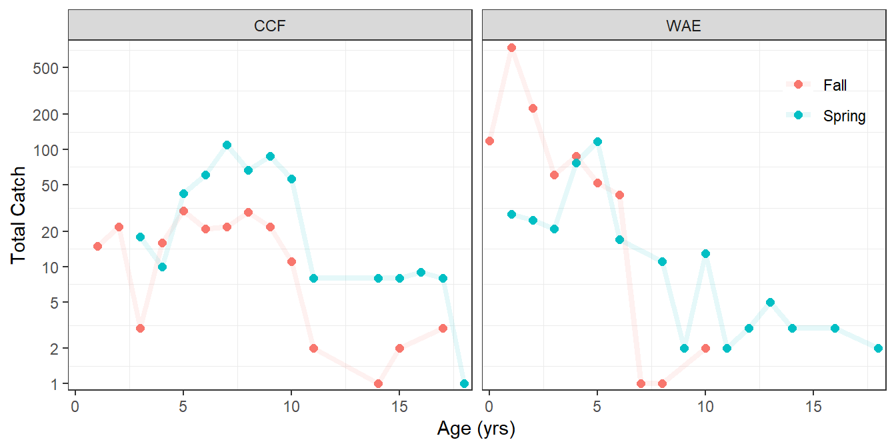

library(tidyverse) # for dplyr, tidyr, purr packages
library(FSA) # for ALK functionalityIntroduction
An age-length key (ALK) describes the relationship between length (category) and age of fish. An estimated age may be assigned to unaged fish in a sample based on the ALK derived from aged fish from the same (or very closely related) sample as described by Isermann and Knight (2005) and implemented in FSA (Ogle 2016). It is critical to this process that the ALK is representative of the fish to which ages will be assigned. Thus, for example, it is not recommended to use an ALK developed from fish collected in one year to assign age to fish collected in another year.1
1 The same argument can be made for fish from different areas.
This recommendation can lead to cumbersome data wrangling during analysis. For example, suppose that samples of fish were collected from two different areas over a five year period. In this case separate age-length keys would be required to be developed and applied for the ten combinations of locations and years. For each location-year the specific data would need to be isolated and for that data the ALK developed and applied, which has several steps as was shown in Ogle (2016) and will be outlined below. The final data produced for each location-year would then need to be combined back together to make an overall data set. In other words, using the Isermann and Knight (2005) method to assign estimated ages to unaged fish for multiple groups of fish is quite a bit of work. The goal of this post is to provide a more efficient method to accomplish this task.
The following packages are loaded for use below.
The random number seed was set to ensure repeatability for the random components of alkIndivAge() below.
set.seed(14354454)
Age-Length Keys in FSA
Original Example from Ogle (2016)
Ogle (2016) demonstrated the Isermann and Knight (2005) method for assigning ages to unaged Creek Chubs (Semotilus atromaculatus). The portion of the script used there to produce a final data frame with ages for all sampled fish is shown below.2
2 This code was extracted from the script provided here. It is slightly modified here to maintain the original unaltered data frame in cc.
## Load data
cc <- read.csv("https://derekogle.com/IFAR/scripts/CreekChub.csv")
## Add length category variable
cc1 <- cc |> mutate(lcat10=lencat(len,w=10))
## Separate aged and unaged fish
cc1.unaged <- filter(cc1,is.na(age))
cc1.aged <- filter(cc1,!is.na(age))
## Develop ALK from aged fish
alk.freq <- xtabs(~lcat10+age,data=cc1.aged)
alk <- prop.table(alk.freq,margin=1)
## Use I-K method to assign ages to unaged fish
cc1.unaged.mod <- alkIndivAge(alk,age~len,data=cc1.unaged)
## Create overall data frame with ages for all fish
cc1.fnl <- rbind(cc1.aged,cc1.unaged.mod)The lengths-at-age in this final data frame may be summarized as follows.
cc1.fnl |>
group_by(age) |>
summarize(n=n(),
mn=mean(len,na.rm=TRUE),
sd=sd(len,na.rm=TRUE)) |>
as.data.frame()#R| age n mn sd
#R| 1 0 20 48.65000 5.62209
#R| 2 1 142 74.64789 16.82163
#R| 3 2 43 113.41860 15.77405
#R| 4 3 8 151.87500 11.17954
#R| 5 4 5 183.20000 17.25399Simplifying Function
I have resisted writing a function that would combine all the steps above, as I did not want to create a “black-box” function for this analysis that could be implemented without much thought. However, such a function would be useful for efficiently applying ALKs to multiple groups of fish. Thus, I create such a function and demonstrate how it can be used to produce the same results as those shown for Creek Chub in Ogle (2016).3 In the next section, I demonstrate how this new function can then be used to efficiently apply ALKs for multiple groups of fish.
3 he same at least within rounding because of the inherent randomization in the Isermann and Knight (2005) method.
The applyALK() function created below performs the code shown above to create a “final” data frame that has ages assigned to the unaged fish based on the ALK. The function largely repeats the code above but uses some “advanced” code (e.g., deparse(substitute()) and {{}}) to handle the use of unquoted variables names.4
4 This allows the variable names to be supplied by user in the function call, rather than hard-coded in the function.
## Computes and applies an ALK
## data: The data frame with, at least, the age & length variables
## avar: The name (without quotes) of the age variable in data
## lvar: The name (without quotes) of the length variable in data
## w: The width of length categories/bins for use in the ALK
## Returns the data data frame with ages in avar assigned from the ALK for
## unaged fish and a new length category (lcat) variable derived from w
applyALK <- function(data,avar,lvar,w) {
## Get avar variable name as character for non-tidyverse functions below
avarn <- deparse(substitute(avar))
## Add length category variable
data <- data |> dplyr::mutate(lcat=FSA::lencat({{lvar}},w=w))
## Separate into aged and unaged dataframes
aged <- data |> dplyr::filter(!is.na({{avar}}))
unaged <- data |> dplyr::filter(is.na({{avar}}))
## Make ALK (find frequencies, convert to row proportions)
ALK <- prop.table(xtabs(as.formula(paste0("~lcat+",avarn)),data=aged),margin=1)
## Apply ALK according to Isermann-Knight method
tmp <- FSA::alkIndivAge(ALK,as.formula(paste0(avarn,"~lcat")),data=unaged)
## Put aged and newly assigned age data frames together to return
dplyr::bind_rows(aged,tmp)
}With this new function the final data frame can be created by supplying the original data frame (with aged and unaged fish) as the first argument, the names of the age and length variables in avar= and lvar= respectively, and the width for the length categories/bins in w=. For example, the final data frame for the Creek Chub case study can be created as follows.5
5 Note the use the original cc data frame without the length categorization variable.
cc.fnl <- applyALK(cc,avar=age,lvar=len,w=10)The lengths-at-age summary for this final data frame is similar to that from above.6
6 Again, not exact because of the inherent randomization in the Isermann and Knight (2005) method.
cc.fnl |>
group_by(age) |>
summarize(n=n(),
mn=mean(len,na.rm=TRUE),
sd=sd(len,na.rm=TRUE)) |>
as.data.frame()#R| age n mn sd
#R| 1 0 20 48.95000 6.012925
#R| 2 1 142 74.66197 16.955046
#R| 3 2 43 113.23256 15.929663
#R| 4 3 8 151.87500 11.179541
#R| 5 4 5 183.20000 17.253985
Important
One still needs to carefully consider the application of ALKs for each of the groups. For example, if the minimum length of unaged fish is less than the minimum length of aged fish (i.e., smaller than that which the ALK is based on) for any one group then this process will fail for ALL groups. In other words a complete fail will occur if there is a fail for any one group in the analysis.
Efficiently Applying ALKs to Multiple Groups
Example Data
Schall et al. (2020) examined the effect of season (Spring and Fall) on the vital statistics of Channel Catfish (Ictalurus punctatus) and Walleye (Sander vitreus) in a large Nebraska reservoir. One part of their analysis required computing mortality rates from catch curves for each species and season combination. Prior to constructing the catch curve they used the Isermann and Knight (2005) method to assign estimated ages to unaged fish. Schall et al. (2020) provided the raw data as a CSV file in their Supplement Material Data S1. Note that I removed some variables here for simplicity of presentation in this post, and that their Month completely defined Season.
dat <- read.csv("JFWM-20-027.S1.csv") |>
select(-Year,-Weight,-Sex,-BCAge,-BCLength) |>
mutate(Season=case_when(
Month=="May" ~ "Spring",
Month=="September" ~ "Fall"
))
headtail(dat)#R| Spp Length Month Age Season
#R| 1 CCF 279 May 3 Spring
#R| 2 CCF 334 May 4 Spring
#R| 3 CCF 351 May 4 Spring
#R| 2377 WAE NA September NA Fall
#R| 2378 WAE NA September NA Fall
#R| 2379 WAE NA September NA FallA common “issue” with using the ALK to assign ages to unaged fish is that the lengths of some unaged fish are not represented within the lengths of aged fish used to derive the ALK. In other words, the ALK does not contain information for fish of those lengths. The summary below is used to find the sample size and valid sample size (i.e., after excluding fish with no length measurement) and minimum and maximum length for each combination of species, season, and whether an age was assigned or not.
dat |>
mutate(Aged=!is.na(Age)) |>
group_by(Spp,Season,Aged) |>
summarize(n=n(),
validn=FSA::validn(Length),
minL=min(Length,na.rm=TRUE),
maxL=max(Length,na.rm=TRUE))#R| # A tibble: 8 × 7
#R| # Groups: Spp, Season [4]
#R| Spp Season Aged n validn minL maxL
#R| <chr> <chr> <lgl> <int> <int> <int> <int>
#R| 1 CCF Fall FALSE 105 104 197 674
#R| 2 CCF Fall TRUE 97 97 200 724
#R| 3 CCF Spring FALSE 394 393 260 733
#R| 4 CCF Spring TRUE 104 104 279 769
#R| 5 WAE Fall FALSE 883 870 181 634
#R| 6 WAE Fall TRUE 466 466 157 676
#R| 7 WAE Spring FALSE 117 116 332 724
#R| 8 WAE Spring TRUE 213 213 191 753It is seen from this that there are some missing length measurements (n does not equal validn in all cases) and that the minimum length of unaged fish is less than the minimum length of aged fish for Channel Catfish in both the Spring and Fall. Thus, to appropriately use the Isermann and Knight (2005) method as implemented in alkIndivAge() of FSA, those records with missing lengths must be removed, as well as those records for Channel Catfish that are less than the minimum length for aged Channel Catfish in their respective season.7
7 It is not clear that Schall et al. (2020) did this, but it is required when using alkIndivAge().
dat <- dat |>
filter(!is.na(Length)) |>
filter(!(Spp=="CCF" & Season=="Spring" & Length<279)) |>
filter(!(Spp=="CCF" & Season=="Fall" & Length<200))Method-Specific Data Wrangling
The first step in efficiently applying the ALK to all groups is to “split” the original data frame based on the “groups” with split(). Below dat is split by the combination of Spp (species) and Season.
dat2 <- split(dat,~Spp+Season)The result, in dat2, is a list with four items. Each item in the list is a data frame with the same structure as the original dat but reduced to a specific group defined by Spp and Season. Below names() is used to show that the names of the four items in dat2 are combinations of the “levels” in Spp and Season.
names(dat2)#R| [1] "CCF.Fall" "WAE.Fall" "CCF.Spring" "WAE.Spring"The specifics of one of these items is examined by appending the item name to dat2, separated by a $. Below, as an example, are a few rows from the beginning and end of the data frame in CCF.Spring (Channel Catfish in Spring).8
8 Note here that it appears that all Spp values are “CCF”, all Season values are “Spring”, and that some fish have ages (the top three) and some do not (the bottom three).
headtail(dat2$CCF.Spring)#R| Spp Length Month Age Season
#R| 1 CCF 279 May 3 Spring
#R| 2 CCF 334 May 4 Spring
#R| 3 CCF 351 May 4 Spring
#R| 491 CCF 701 May NA Spring
#R| 492 CCF 730 May NA Spring
#R| 493 CCF 733 May NA SpringApplying ALK
The idea now is to “apply” applyALK() to each data frame in each item of the list in dat2. This can be done with lapply() where the list of data frames is the first argument, the function to apply is the second argument, and the remaining arguments are further arguments to the function being applied. The result is a list with data frames in the items as before, but now with ages for all fish.
dat3 <- lapply(dat2,applyALK,avar=Age,lvar=Length,w=10)
names(dat3)#R| [1] "CCF.Fall" "WAE.Fall" "CCF.Spring" "WAE.Spring"headtail(dat3$CCF.Spring)#R| Spp Length Month Age Season lcat
#R| 1 CCF 279 May 3 Spring 270
#R| 2 CCF 334 May 4 Spring 330
#R| 3 CCF 351 May 4 Spring 350
#R| 491 CCF 701 May 17 Spring 700
#R| 492 CCF 730 May 17 Spring 730
#R| 493 CCF 733 May 17 Spring 730The exact same result9 is also obtained with map() from the purr package, which was loaded with library(tidyverse). The arguments to map() and the resulting list are the same as those for lapply().
9 Disregarding the randomization inherent in alkIndivAge().
dat3 <- map(dat2,applyALK,avar=Age,lvar=Length,w=10)
names(dat3)#R| [1] "CCF.Fall" "WAE.Fall" "CCF.Spring" "WAE.Spring"headtail(dat3$CCF.Spring)#R| Spp Length Month Age Season lcat
#R| 1 CCF 279 May 3 Spring 270
#R| 2 CCF 334 May 4 Spring 330
#R| 3 CCF 351 May 4 Spring 350
#R| 491 CCF 701 May 17 Spring 700
#R| 492 CCF 730 May 17 Spring 730
#R| 493 CCF 733 May 17 Spring 730The reason for introducing map() from purr() is that ultimately the four data frames in dat3 need to be “row-bound” together to form a single data frame. There are multiple ways to do this, but the simplest is to use map_df() from purr. map_df() has the same arguments as map() and lapply() but it returns a single combined data frame, rather than a list with multiple data frames.
dat3 <- map_df(dat2,applyALK,avar=Age,lvar=Length,w=10)
names(dat3) # now column names of the single data frame#R| [1] "Spp" "Length" "Month" "Age" "Season" "lcat"headtail(dat3)#R| Spp Length Month Age Season lcat
#R| 1 CCF 232 September 1 Fall 230
#R| 2 CCF 216 September 1 Fall 210
#R| 3 CCF 238 September 1 Fall 230
#R| 2355 WAE 632 May 10 Spring 630
#R| 2356 WAE 653 May 10 Spring 650
#R| 2357 WAE 720 May 13 Spring 720
Warning
The process, as shown above, will not handle situations where the length category bin width required differs among the groups.
Preview - Summaries
While there are still some issues to deal with before the mortality rate can be estimated via catch curve with these data, the summary table and graphic below provide an indication of how the final result from above can be visualized. The issue of estimating mortality rate from these data will be taken up in the next post.
sumdat1 <- dat3 |>
group_by(Spp,Season,Age) |>
summarize(Catch=n(),
meanL=mean(Length),
sdL=sd(Length))
sumdat1#R| # A tibble: 53 × 6
#R| # Groups: Spp, Season [4]
#R| Spp Season Age Catch meanL sdL
#R| <chr> <chr> <dbl> <int> <dbl> <dbl>
#R| 1 CCF Fall 1 15 227. 14.7
#R| 2 CCF Fall 2 22 262. 37.7
#R| 3 CCF Fall 3 3 309 27.7
#R| 4 CCF Fall 4 16 359. 15.4
#R| 5 CCF Fall 5 30 384. 37.5
#R| 6 CCF Fall 6 21 405. 23.4
#R| 7 CCF Fall 7 22 430. 25.1
#R| 8 CCF Fall 8 29 449. 40.6
#R| 9 CCF Fall 9 22 488. 40.3
#R| 10 CCF Fall 10 11 495. 29.5
#R| # … with 43 more rowsggplot(dat=sumdat1,mapping=aes(x=Age,y=Catch,color=Season)) +
geom_point(size=2) +
geom_line(alpha=0.1,linewidth=1.5) +
scale_x_continuous(name="Age (yrs)",expand=expansion(mult=0.02)) +
scale_y_continuous(name="Total Catch",expand=expansion(mult=0.02),
trans="log",breaks=c(1,2,5,10,20,50,100,200,500)) +
facet_wrap(vars(Spp)) +
theme_bw() +
theme(panel.grid.major=element_blank(),
legend.position=c(1,1),
legend.justification=c(1.1,1.1),
legend.title=element_blank(),
legend.background=element_blank())
References
Isermann, D., and C. Knight. 2005. A computer program for age–length keys incorporating age assignment to individual fish. North American Journal of Fisheries Management 25:1153–1160.
Schall, B. J., C. W. Schoenebeck, and K. D. Koupal. 2020. Seasonal sampling influence on population dynamics and yield of Channel Catfish and Walleye in a large Great Plains reservoir. Journal of Fish and Wildlife Management 12(1):223–233.
Reuse
Citation
BibTeX citation:
@online{h.ogle2023,
author = {Derek H. Ogle},
title = {Working with {Multiple} {Age-Length} {Keys}},
date = {2023-04-23},
url = {https://fishr-core-team.github.io/fishR//blog/posts/2023-4-23_Multiple_ALKs},
langid = {en}
}
For attribution, please cite this work as:
Derek H. Ogle. 2023, April 23. Working with Multiple Age-Length Keys. https://fishr-core-team.github.io/fishR//blog/posts/2023-4-23_Multiple_ALKs.